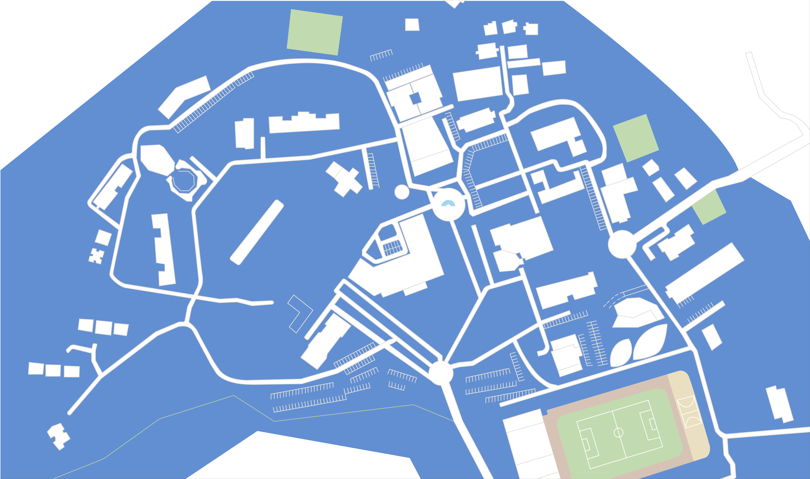

{% load static %}

<!DOCTYPE html>
<html>
<head>
    <!-- Google tag (gtag.js) -->
    <script async src="https://www.googletagmanager.com/gtag/js?id=G-Y6M724Q9WN"></script>
    <script>
      window.dataLayer = window.dataLayer || [];
      function gtag(){dataLayer.push(arguments);}
      gtag('js', new Date());

      gtag('config', 'G-Y6M724Q9WN');
    </script>
    <meta name="viewport" content="width=device-width, initial-scale=1.0">
    <link rel="stylesheet" type="text/css" href="../static/styles.css">
    <link rel="preconnect" href="https://fonts.googleapis.com">
    <link rel="preconnect" href="https://fonts.gstatic.com" crossorigin>
    <link href="https://fonts.googleapis.com/css2?family=Gaegu:wght@300&display=swap" rel="stylesheet">
    <title>캠퍼스맵</title>
    <link rel="icon" href="../static/photo/GaBeanLogo.png" type="image/x-icon">
    <!-- 경고 메시지를 표시하는 스크립트를 head에 추가 -->
    <script>
        window.addEventListener('DOMContentLoaded', (event) => {
            // 경고 메시지를 나타내는 div를 생성
            var warningDiv = document.createElement("div");
            warningDiv.innerHTML = "이 기능은 전체화면을 권장합니다. 창의 크기를 줄일 시 정확한 기능을 사용하기 어려울 수 있습니다.";

            // 스타일을 적용
            warningDiv.style.position = "absolute";
            warningDiv.style.top = "0";
            warningDiv.style.left = "0";
            warningDiv.style.width = "100%";
            warningDiv.style.backgroundColor = "rgba(0, 0, 0, 0.7)";
            warningDiv.style.color = "#fff";
            warningDiv.style.textAlign = "center";
            warningDiv.style.padding = "10px";

            // body에 추가
            document.body.appendChild(warningDiv);

            // 5초 후에 경고 메시지를 숨김
            setTimeout(function() {
                warningDiv.style.display = "none";
            }, 5000); // 5초 (5000 밀리초)
        });
    </script>
</head>
<body>

<div class="header">
    <div class="logo-and-menu">
        <a href="{% url 'GaBean:home' %}">
            <div class="logo">
                
            </div>
        </a>
        <div id="menu">
            <ul>
                <li>
                    <a href="{% url 'GaBean:info_gabean' %}">GaBean이란?</a>
                </li>
                <li style="background-color: skyblue; color: #FFF;">
                    <a href="{% url 'GaBean:campusmap' %}">캠퍼스맵</a>
                    <ul>
                        <li><a href="{% url 'GaBean:campusmap' %}">캠퍼스맵</a></li>
                        <li><a href="{% url 'GaBean:campusmap_detail' %}">상세 정보</a></li>
                    </ul>
                </li>
                <li>
                    <a href="{% url 'GaBean:humun_food' %}">후문</a>
                    <ul>
                        <li><a href="{% url 'GaBean:humun_food' %}">음식점</a></li>
                        <li><a href="{% url 'GaBean:humun_random' %}">오늘 뭐 먹지?</a></li>
                    </ul>
                </li>
                <li>
                    <a href="{% url 'GaBean:info_sugang' %}">학교 정보</a>
                    <ul>
                        <li><a href="{% url 'GaBean:info_sugang' %}">수강 정보</a></li>
                        <li><a href="{% url 'GaBean:info_graduate' %}">졸업 정보</a></li>
			<li><a href="{% url 'GaBean:info_library' %}">도서관</a></li>
                    </ul>
                </li>
                <li>
                    <a href="{% url 'GaBean:info_bus' %}">교통</a>
                    <ul>
                        <li><a href="{% url 'GaBean:info_bus' %}">버스</a></li>
                        <li><a href="{% url 'GaBean:info_subway' %}">지하철</a></li>
                        <li><a href="{% url 'GaBean:info_shuttle' %}">셔틀버스</a></li>
                    </ul>
                </li>
                <li>
                    <a href="{% url 'GaBean:sound_kong' %}">콩들의 소리</a>
                </li>
            </ul>
        </div>
    </div>
</div>
<button class="fixed-button" id="openSlider"></button>

<!-- 슬라이드인 메뉴 -->
<div class="slider-menu">
    <div class="slider-content">
        ID : 학번 / PW : SU-WINGs PW
        <br>(즉, SU-WINGs 로그인과 방식이 같다)
    </div>
</div>

<script>
    window.addEventListener('DOMContentLoaded', (event) => {
        // 버튼 엘리먼트 가져오기
        var fixedButton = document.querySelector('.fixed-button');

        // 스크롤 이벤트 리스너 등록
        window.addEventListener('scroll', function() {
            // 스크롤 위치 가져오기
            var scrollY = window.scrollY;
            // 원하는 스크롤 위치 이상이면 버튼 위치 변경
            if (scrollY > 200) { // 원하는 스크롤 위치로 수정
               fixedButton.style.top = '100px'; // 원하는 위치로 조절 가능
            } else {
                fixedButton.style.top = '100px'; // 다시 초기 위치로 조절 가능
            }
        });

        // 초기 버튼 위치 설정
        fixedButton.style.top = '100px';
        fixedButton.style.right = '0px';
    });

    var imageButton = document.getElementById('openSlider');

    // 클릭 이벤트 리스너 등록
    imageButton.addEventListener('click', function() {
        // 클릭 시 이미지 변경
        imageButton.classList.toggle('clicked');
    });

</script>
<script>
    // 슬라이드인 메뉴 열기/닫기
    var openSliderButton = document.getElementById('openSlider');
    var sliderMenu = document.querySelector('.slider-menu');

    sliderMenu.style.top = '100px';

    openSliderButton.addEventListener('click', function() {
        if (sliderMenu.style.right === '-350px' || sliderMenu.style.right === '') {
            sliderMenu.style.right = '60px';
        } else {
            sliderMenu.style.right = '-350px';
        }
    });
</script>
<div class="news-button-container">
    <button id="newsButton" class="newsButton">인권<br>뉴스</button>
</div>
<script>
    window.addEventListener('DOMContentLoaded', (event) => {
        var newsButton = document.getElementById('newsButton');

        // 초기 버튼 위치 설정
        newsButton.style.top = '170px';
        newsButton.style.right = '0px';

        newsButton.addEventListener('click', function() {
            window.location.href = "{% url 'GaBean:news' %}";
        });
    });
</script>
<div class="page-title-img">
</div>
<div class="search-container">
    <input type="text" id="search-input" placeholder="건물 이름 검색">
    <button id="search-button">
        
    </button>
</div>
<div class="search-results" id="search-results"></div>
<div class="main-container">
    <div class="list-container">
        <div class="list-title">
            <h1><a href="{% url 'GaBean:campusmap' %}">캠퍼스맵</a></h1>
        </div>
        <h3>목록</h3>
        <ul>
            <li><a href="{% url 'GaBean:campusmap' %}">캠퍼스맵</a></li>
            <li><a href="{% url 'GaBean:campusmap_detail' %}">상세 정보</a></li>
        </ul>
        <h5 style="text-align: center;">삼육대학교를 간단하게 나타낸 도면입니다. <br>변경사항이 있다면 <span class="half_background">"콩들의 소리"</span>에 제보 바랍니다.</h5>
        <div style="display: block; margin: 0 auto; text-align: center;" class="button-2">
            <div class="eff-2"></div>
            <a href="{% url 'GaBean:sound_kong' %}">콩들의 소리 바로가기</a>
        </div>
    </div>
    <div class="content-container">
        <div class="left-container">
            <div id="map-container">
                
            </div>
        </div>
    </div>
    <div class="container-separator"></div>
    <div class="content-container">
        <div class="right-container">
            <aside id="description-aside"></aside>
        </div>
    </div>
</div>
<script>
    const mapContainer = document.getElementById("map-container");
    const descriptionAside = document.getElementById("description-aside");
    let activeButton = null; // 활성화된 버튼을 추적하기 위한 변수
    let activeDescriptionDiv = null;
    let imageWidth = 100;

    // 버튼을 생성하고 이벤트 핸들러를 등록하는 함수
    function addMarkerButton(x, y, description, detailFunc) {
        const button = document.createElement("button");
        button.classList.add("marker-button");
        button.style.left = `${x}%`;
        button.style.top = `${y}%`;
        mapContainer.appendChild(button);

        const descriptionDiv = document.createElement("div");
        descriptionDiv.classList.add("marker-description");
        descriptionDiv.style.left = `${x}%`;
        descriptionDiv.style.top = `${y + 10}%`;
        mapContainer.appendChild(descriptionDiv);

        const detailButton = document.createElement("button");
        detailButton.classList.add("detail-button");
        detailButton.textContent = "상세보기";
        detailButton.style.display = "block"; // 블록 레벨 요소로 변경
        detailButton.style.margin = "0 auto"; // 가로 방향 가운데 정렬

        descriptionDiv.innerHTML = `
            <p class="description-text">
                <span>${description}</span>
            </p>
        `;
        descriptionDiv.appendChild(detailButton); // 상세보기 버튼을 설명 요소에 추가

        // 상세보기 버튼의 이벤트 핸들러 등록
        detailButton.addEventListener("click", function() {
            console.log("Detail button clicked"); // 로그 추가
            if (activeDescriptionDiv) {
                activeDescriptionDiv.style.display = "none";
            }
            detailFunc();
        });

        button.addEventListener("click", function(event) {
            console.log("Marker button clicked:", description);
            event.stopPropagation(); // 이벤트 버블링 중지
            if (activeButton !== button) {
                if (activeButton) {
                    activeButton.classList.remove("active");
                }
                activeButton = button;
                activeButton.classList.add("active");
            }
            if (activeDescriptionDiv) {
                activeDescriptionDiv.style.display = "none";
            }

            descriptionAside.innerHTML = "";
            descriptionDiv.style.display = "block";
            activeDescriptionDiv = descriptionDiv;
        });
    }

    function addMarkerDetail(detailContent, imageURL) {
        console.log("Displaying detail:", detailContent);
        console.log("Image URL:", imageURL);

        const detailDescriptionDiv = document.createElement("div");
        detailDescriptionDiv.classList.add("detail-description");

        if (imageURL) {
            const imageElement = document.createElement("img");
            imageElement.src = imageURL;
            detailDescriptionDiv.appendChild(imageElement);
        }

        const descriptionElement = document.createElement("p");
        descriptionElement.innerHTML = detailContent;
        detailDescriptionDiv.appendChild(descriptionElement);

        descriptionAside.innerHTML = "";
        descriptionAside.appendChild(detailDescriptionDiv);
        activeDescriptionDiv = detailDescriptionDiv;
    }


    function resizeMapContainer(newWidth) {
        mapContainer.style.width = `${newWidth}%`;
        imageWidth = newWidth;
    }

    // 초기 로드시 이미지 크기와 왼쪽 컨테이너 크기 설정
    resizeMapContainer(imageWidth);

    const searchButton = document.getElementById("search-button");
    const searchResultsDiv = document.getElementById("search-results");

    searchButton.addEventListener("click", function() {
        const searchInput = document.getElementById("search-input").value.toLowerCase();

        // 검색 결과 초기화
        searchResultsDiv.innerHTML = "";

        // 모든 marker-description 요소 가져오기
        const descriptionElements = document.querySelectorAll(".marker-description");

        // 검색 결과 버튼 생성
        const matchingResults = Array.from(descriptionElements).filter(descriptionElement => {
            const descriptionText = descriptionElement.querySelector("p").textContent.toLowerCase();
            return descriptionText.includes(searchInput);
        });

        if (matchingResults.length === 0) {
            const noResultMessage = document.createElement("p");
            noResultMessage.textContent = "일치하는 검색 결과가 없습니다.";
            searchResultsDiv.appendChild(noResultMessage);
        } else {
            matchingResults.forEach(matchingResult => {
                const descriptionText = matchingResult.querySelector("p").textContent;
                const resultButton = document.createElement("button");
                resultButton.textContent = descriptionText;
                resultButton.classList.add("search-result-button");
                resultButton.addEventListener("click", function() {
                    const markerButton = matchingResult.previousSibling;
                    markerButton.click();
                });
                searchResultsDiv.appendChild(resultButton);
            });
        }
    });

    const searchInput = document.getElementById("search-input");

    searchInput.addEventListener("keyup", function(event) {
        if (event.key === "Enter") {
            searchButton.click();
        }
    });


    // 버튼을 원하는 위치에 추가합니다. 버튼마다 설명과 역할을 지정하세요.
    addMarkerButton(44.8, 38, "셔틀버스 정류장", function() {
        addMarkerDetail(
            "<br><br><h1>셔틀버스 정류장<h1><br><h3>사진 왼쪽 뒤로 보이는게 셔틀버스 정류장입니다.<br> 학교 내에는 2-2버스가 구리역을 통해 다니고 있습니다.<br></h3>",
            "../static/photo/셔틀버스 정류장.jpg"
        );
    });

    addMarkerButton(50.5, 40, "분수대", function() {
        addMarkerDetail(
            "<br><br><h1>분수대</h1><br><h3>삼육대학교 학생홍보대사 수앰베서더(SU-AMBASSADOR)가 선정한 <br> 삼육대학교 포토존 BEST 6에 어울리는 물줄기를 보여주고 있습니다.</h3>",
            "../static/photo/분수대2.png"
        );
    });

    addMarkerButton(71.5, 82, "대운동장", function() {
        addMarkerDetail(
            "<br><br><h1>대운동장</h1><br><h3>풋살장과 농구장, 그리고 축구장이 함께 있는 운동장입니다.<br>바로 옆에는 삼육고등학교와 체육관이 있습니다.</h3>",
            "../static/photo/운동장.PNG"
        );
    });

    addMarkerButton(61, 85, "체육관", function() {
        addMarkerDetail(
            "<br><br><h1>체육관</h1><br><h2>1층</h2><h3>수영장 / 남ㆍ여 탈의실 및 샤워실 / 체력측정실 / 운동처방실<br> 체력관리실 / 시청각실 / 탁구장 / 무도관 / 스크린 골프장</h3><br><h2>2층</h2><h3>주경기장 (농구코트 1면, 배구코트 1면, 배드민턴코트 4면)<br> 스쿼시장 / 남ㆍ여 탈의실 및 샤워실 / 등록실 / 관리지원실 / 보건소</h3><br><h2>3층</h2><h3>주경기장 관람석 (370석)</h3>",
            "../static/photo/체육관.PNG"
        );
    });

    addMarkerButton(74, 64, "다니엘관/요한관<br>(박물관)", function() {
        addMarkerDetail(
            "<br><br><h1>다니엘관/요한관<br>(박물관)</h1><br><h3>2012년 신축건물로 우리대학의 로고를 응용한 랜드마크 건물입니다.<br>다니엘관과 요한관은 거의 같은 건물이라고 봐도 무방합니다. </h3>",
            "../static/photo/다니엘관.PNG"
        );
    });

    addMarkerButton(82, 53, "제3과학관", function() {
        addMarkerDetail(
            "<br><br><h1>제3과학관</h1><br><h3>물리치료학과와 간호학과, 약학과가 사용하는 건물입니다.<br>건물 전체에 실험실과 연구실들이 다양하게 있습니다.</h3>",
            "../static/photo/제3과학관.PNG"
        );
    });

    addMarkerButton(85, 71, "뉴스타트<br>센터", function() {
        addMarkerDetail(
            "<br><br><h1>뉴스타트&nbsp;센터</h1><br><h3>2014년 12월 4일 준공. 약 30억의 예산을 투입해 건축한 뉴스타트센터는 연면적 1456㎡ (약440평)규모의 반 지하 1층, 지상 3층으로 <br>이루어져 있으며 96명을 수용할 수 있도록 지어졌습니다. <br>* 인성교육원을 찾고 싶다면 여기로 오시면 됩니다.</h3>",
            null
        );
    });

    addMarkerButton(75.5, 33, "식품영양학과<br>실습실", function() {
        addMarkerDetail(
            "<br><br><h1>식품영양학과 실습실</h1><br><h3>식품영양학과에서 사용하는 실습실입니다.</h3>",
            null
        );
    });

    addMarkerButton(80, 35, "학생상담센터", function() {
        addMarkerDetail(
            "<br><br><h1>학생상담센터</h1><br><h3>학생상담센터입니다. 다양한 상담 프로그램을 진행하는 곳입니다.</h3>",
            null
        );
    });

    addMarkerButton(71.5, 39, "제2과학관", function() {
        addMarkerDetail(
            "<br><br><h1>제2과학관</h1><br><h3>동물생명자원학과, 환경디자인원예학과<br>그리고 화학생명과학과가 사용하는 건물입니다.</h3>",
            "../static/photo/제2과학관.jpg"
        );
    });

    addMarkerButton(64, 27.5, "제1과학관", function() {
        addMarkerDetail(
            "<br><br><h1>제1과학관</h1><br><h3>식품영양학과, 보건관리학과가 사용하는 건물입니다. 건물 내에 실험실, 조리실습실, 연구실 등이 있습니다.</h3>",
            "../static/photo/제1과학관.png"
        );
    });

    addMarkerButton(64, 36, "에스라관", function() {
        addMarkerDetail(
            "<br><br><h1>에스라관</h1><br><h3>보건관리학과에서 사용하는 건물입니다.<br> 강의실이 다양하게 있고, 1층에는 헬스장과 휴게실이 있습니다.</h3>",
            "../static/photo/에스라관.PNG"
        );
    });

    addMarkerButton(59.5, 47, "도서관", function() {
        addMarkerDetail(
            "<br><br><h1>도서관</h1><br><h3>지하 1층부터 3층까지 공부하는 공간이 있는 도서관입니다.<br>다양한 자료와 서적들이 구비되어 있고, 휴게실과 스터디룸도 있습니다.</h3>",
            "../static/photo/도서관.PNG"
        );
    });

    addMarkerButton(65, 56, "바울관", function() {
        addMarkerDetail(
            "<br><br><h1>바울관</h1><br><h2>지하1층</h2><h3>구내서점 / 문구점 / 빵집 / 꽃집</h3><br><h2>1층</h2><h3>학생지원처 / 학사지원실 / 상담지원팀 / 취업진로지원센터 / 모의면접실</h3><br><h2>2층</h2><h3>경영(정보)학과 사무실</h3><br><h2>3층</h2><h3>중국어학실 / 유비쿼터스실</h3><br><h2>4층</h2><h3>항공관광외국어학부 사무실</h3>",
            "../static/photo/바울관.png"
        );
    });

    addMarkerButton(65.3, 67.5, "학생회관", function() {
        addMarkerDetail(
            "<br><br><h1>학생회관</h1><br><h2>1층</h2><h3>매점(CU편의점) / 파인하우스(식당) / 우리은행 현금인출기</h3><br><h2>2층</h2><h3>대학총학생회 / 취업지원팀 / 예비군대대 / 학생휴게실 / 안경점</h3><br><h2>3층</h2><h3>총대의원회 / 졸업준비위원회 / 학회연합회 / (영자)신문사 / 각 동아리방</h3><br><h2>4층</h2><h3>동아리연합회 / 각 동아리방</h3>",
            "../static/photo/학생회관.PNG"
        );
    });

    addMarkerButton(48, 30, "70주년 기념관<br>(대강당)", function() {
        addMarkerDetail(
            "<br><br><h1>70주년 기념관</h1><br><h2>지하1층</h2><h3>음악학과 연습실 / 악기실 / 작곡실 / 첼로실 / 관현악실 / 렛슨실</h3><br><h2>1층</h2><h3>강당무대 / 강당홀 / 컨서바토리 / 영상선교팀</h3><br><h2>2층</h2><h3>강당홀 / VOS방송실 / 편집실 / 영상선교팀</h3>",
            "../static/photo/70주년기념관.PNG"
        );
    });

    addMarkerButton(46.5, 20, "제1실습관", function() {
        addMarkerDetail(
            "<br><br><h1>제1실습관</h1><br><h2>1층</h2><h3>메카트로닉스실험실</h3><br><h2>2층</h2><h3>인공지능융합학부 사무실 / 안전관리팀</h3><br><h2>3층</h2><h3>IT융합공학과 사무실 / 유아교육과 사무실 / 전산교육실 (308~310호)</h3><br><h2>4층</h2><h3>컴퓨터공학부 사무실 / 그 외 컴퓨터실습실</h3><br><h2>5층</h2><h3>창업보육센터</h3>",
            "../static/photo/제1실습관.png"
        );
    });

    addMarkerButton(54.5, 18.5, "디자인관(구 제2실습관)", function() {
        addMarkerDetail(
            "<br><br><h1>디자인관(구 제2실습관)</h1><br><h3>아트앤디자인학과와 건축학과가 사용하는 건물입니다. <br>101호에 아트앤디자인학과 사무실이 있고,<br> 202호에는 건축학과 사무실이 있습니다.</h3>",
            "../static/photo/디자인관.PNG"
        );
    });

    addMarkerButton(54.2, 24.5, "아트&디자인관", function() {
        addMarkerDetail(
            "<br><br><h1>아트&디자인관</h1><br><h3>아트앤디자인학과가 사용하는 건물입니다.<br>1층에 조교실이 있고, 다른 층에는 강의실들이 있습니다.</h3>",
            "../static/photo/아트앤디자인관.PNG"
        );
    });

    addMarkerButton(44, 53.5, "백주년기념관", function() {
        addMarkerDetail(
            "<br><br><h1>백주년기념관</h1><br><h2>1층</h2><h3>총무과(건축·구매팀, 인사팀) / 입학처 / 대학원 / 재무처 / 우편물취급소</h3><br><h2>2층</h2><h3>총장실 / 부총장실 / 기획처 / 사무처 / 교수실 / 기획처 / 소회의실</h3><br><h2>3층</h2><h3>대외협력처 / 대회의실 / 국제교육관 연결통로</h3><br><h2>4층</h2><h3>SU-MVP강의실 / 홍보팀(401호) / 산학협력단 / 연구처 / 문서보관실</h3>",
            "../static/photo/100주년기념관.PNG"
        );
    });

    addMarkerButton(47, 47, "국제교육관", function() {
        addMarkerDetail(
            "<br><br><h1>국제교육관</h1><br><h2>1층</h2><h3>강의실 / 상담심리학과 사무실(102호)</h3><br><h2>2층</h2><h3>강의실</h3><br><h2>3층</h2><h3>장근청홀(입구)</h3><br><h2>4층</h2><h3>장근청홀</h3>",
            null
        );
    });

    addMarkerButton(35.5, 64.5, "신학관", function() {
        addMarkerDetail(
            "<br><br><h1>신학관</h1><br><h3>신학과에서 주로 사용하는 건물입니다. 종교 관련 교양 수업을 들을 때 주로 방문해야하는 건물입니다.</h3>",
            "../static/photo/신학관.PNG"
        );
    });

    addMarkerButton(32, 60, "스미스관", function() {
        addMarkerDetail(
            "<br><br><h1>스미스관</h1><br><h2>1층</h2><h3>시설관리과 / 고시반</h3>",
            "../static/photo/스미스관.png"
        );
    });

    addMarkerButton(26.5, 45, "사무엘관", function() {
        addMarkerDetail(
            "<br><br><h1>사무엘관</h1><br><h3>사회복지학과와 영어영문학과가 주로 사용하는 건물입니다.</h3>",
            "../static/photo/사무엘관.png"
        );
    });

    addMarkerButton(15.2, 47.5, "에덴관", function() {
        addMarkerDetail(
            "<br><br><h1>에덴관</h1><br><h3>여자 대학생들을 위한 생활관(기숙사)입니다.</h3>",
            "../static/photo/에덴관.png"
        );
    });

    addMarkerButton(38, 35, "음악관", function() {
        addMarkerDetail(
            "<br><br><h1>음악관</h1><br><h3>음악학과 학생들이 사용하는 건물입니다. <br>피아노실과 레슨실, 실내악실 등이 있습니다.</h3>",
            "../static/photo/음악관.PNG"
        );
    });

    addMarkerButton(32.7, 25, "시온관", function() {
        addMarkerDetail(
            "<br><br><h1>시온관</h1><br><h3>남자 대학생들을 위한 생활관(기숙사)입니다.</h3>",
            "../static/photo/시온관.png"
        );
    });

    addMarkerButton(25.5, 27, "생활관식당/교직원식당<br>(만나의 집)", function() {
        addMarkerDetail(
            "<br><br><h1>생활관식당/교직원식당<br>(만나의 집)</h1><br><h2>1층</h2><h3>생활관(기숙사)식당</h3><br><h2>2층</h2><h3>교직원식당</h3>",
            "../static/photo/만나의집.png"
        );
    });

    addMarkerButton(34.2, 9, "교직원 테니스장", function() {
        addMarkerDetail(
            "<br><br><h1>교직원 테니스장</h1><br><h3>교직원 테니스장입니다.</h3>",
            null
        );
    });

    addMarkerButton(18, 19, "살렘관", function() {
        addMarkerDetail(
            "<br><br><h1>살렘관</h1><br><h3>신축 생활관(기숙사)입니다.</h3>",
            null
        );
    });

    addMarkerButton(14.7, 32.2, "대학교회", function() {
        addMarkerDetail(
            "<br><br><h1>대학교회</h1><br><h3>교회 / 목회실</h3>",
            "../static/photo/대학교회.png"
        );
    });

    addMarkerButton(18.3, 36.5, "다목적관", function() {
        addMarkerDetail(
            "<br><br><h1>다목적관</h1><br><h2>1층</h2><h3>이종순 기념홀 / SAY</h3><br><h2>2층</h2><h3>대학교회 / 교회사무실 / 목회실 / Lesson실 / 연습실</h3>",
            "../static/photo/다목적관.png"
        );
    });

    addMarkerButton(8.8, 36.5, "브니엘관", function() {
        addMarkerDetail(
            "<br><br><h1>브니엘관</h1><br><h3>대학원생을 위한 생활관(기숙사)입니다.</h3>",
            "../static/photo/브니엘관.png"
        );
    });

    addMarkerButton(8, 45.5, "로뎀관", function() {
        addMarkerDetail(
            "<br><br><h1>로뎀관</h1><br><h3>로뎀관입니다.</h3>",
            "../static/photo/로뎀관.png"
        );
    });

    addMarkerButton(8, 62, "외국인교수사택", function() {
        addMarkerDetail(
            "<br><br><h1>외국인교수사택</h1><br><h3>외국인 교수를 위한 사택입니다.</h3>",
            "../static/photo/외국인교수사택.png"
        );
    });

    addMarkerButton(91.5, 76, "전인교육원", function() {
        addMarkerDetail(
            "<br><br><h1>전인교육원</h1><br><h3>영(靈), 지(知), 체(體)를 고루 발달시키는 전인교육(全人敎育)을 <br>다양한 프로그램을 통하여 학생들을 진리로 영을 새롭게 하고, <br>마음을 변화시켜서 행복한 사람이 되도록 도울 것입니다.</h3>",
            null
        );
    });

    addMarkerButton(59.5, 18, "온실", function() {
        addMarkerDetail(
            "<br><br><h1>온실</h1><br><h3>온실입니다.</h3>",
            "../static/photo/온실.PNG"
        );
    });

    addMarkerButton(59.2, 11.5, "목공실습실", function() {
        addMarkerDetail(
            "<br><br><h1>목공실습실</h1><br><h3>목공실습실입니다.</h3>",
            null
        );
    });

    addMarkerButton(55, 11.5, "실험동물실", function() {
        addMarkerDetail(
            "<br><br><h1>실험동물실</h1><br><h3>실험동물실입니다.</h3>",
            "../static/photo/실험동물실.PNG"
        );
    });

</script>
<div class="footer">
    <a href="https://www.kogl.or.kr/info/license.do" target="_blank"></a>
    <a href="https://ccl.cckorea.org/about/" target="_blank"></a>
    <p style="margin-left: 20px;">Copyright © 2023 양이찬 All rights reserved.
        <br>Dev : Ee Chan Yang
        <br>Logo : Jun Seong Park
        <br>Other Website Dev : Sang Yoon Kim</p>
    <a href="https://www.flaticon.com/kr/free-icons/" title="맑은 아이콘" style="float: right; margin-right: 10px; color: white; font-size: 8pt;">맑은 아이콘  제작자: Freepik - Flaticon</a>
</div>
</body>
</html>
